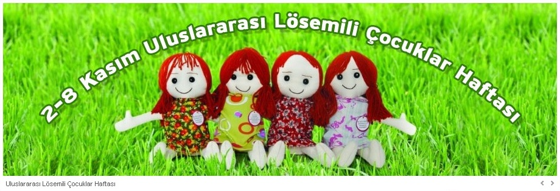

*Kimler lösemi hastalýðýnýn tehdidindedir? Lösemi bir kan hastalýðý. Kanýn yapým yeri kemik iliðidir, iliðinin içerisindeki kök hücreler, kendilerine benzer hücre oluþturur ve çoðalarak kana geçerler. Bu hücrelerdeki bozulmalar hastalýða neden olur. Enfeksiyon, ilaç, vücuda giren bir kimyasal madde, beslenme ve genetik yatkýnlýklar gibi çevresel etkenler hastalýðýn ortaya çýkýþýnda büyük rol oynuyor. En çok 2-5 yaþlarýndaki çocuklarda görülüyor. Tüm toplumda kanser hastalýðýnýn çok fazla arttýðýný görüyoruz. Her 5 kiþiden bir kiþi kanser adayý. Dünya Saðlýk Örgütü bu sayýnýn giderek artacaðýný ve 20 yýl içinde 2-3 katýna çýkacaðýný söylüyor. Kanser vakalarýnýn bir yýlda 10 milyondan 20 milyona çýkmasý da bunu doðruluyor. Türkiye’de her yýl bin 200 çocuk lösemi hastasý olmaya aday. Her yaþtaki insanda görülme olasýlýðý var. Ancak, çocuklarda daha çok görülüyor. 0-16 yaþ grubundaki her çocuk bu hastalýða yakalanabilir.
*Lösemiden korunma yollarý nelerdir? Çocuklar kanser yapýcý maddelerden uzak tutulmalý ve organik gýdalarla beslenmeli. Beslenmemizde yer alan kanser yapan maddeler ile kanserojen çevre etkilerinden yeni doðan bebeklerimizi korumak için çalýþmalarýmýzý sürdürüyoruz. Organik beslenme üzerine çalýþmalarýmýz ve geliri vakýf yararýna kullanýlmak üzere kurduðumuz "Ispanak" isimli bir organik ürünler marketimiz var. Bizim hedefimiz 0-2 yaþ grubu çocuklar. Büyüme çaðýndaki, beyin ve vücut geliþimlerinin en hýzlý ilerlediði bu çocuklarýn beslenmeleri büyük önem taþýyor.
* Yardýmseverler LÖSEV’e nasýl destek olabilir?
Evlerinde kullanmadýklarý eþyalarý yollayabilir, bankaya gidip baðýþta bulunabilir, gönüllümüz olarak çocuklarýmýzý ziyaret edebilir veya kan baðýþý yapabilirler. Ailelere gönderilen yardým paketleri için ev eþyasý, giysi, gýda ve temizlik malzemesi baðýþý alýnýyor.
Damarlarýmýzda dolaþan kanýn yapým yeri olan kemik iliðinin normal olmayan kan hücrelerince istila edilerek kan yapýmýnýn duraksamasýdýr. En çok 2-6 yaþ grubu çocuklarda görülmektedir. Türkiye'de her yýl 1000-1500 yeni lösemili çocuk vakasý ortaya çýkmaktadýr. Nedenleri tam olarak bilinmemekle birlikte genetik ve çevre faktörlerinin etkili olduðu sanýlmaktadýr. |